La cuenta de Bienes de Uso la define el tipo de equipo
Guía de presentación — qué pediste, qué cambió, cómo se usa paso a paso y un aviso importante sobre la compra del bien
1. Qué pediste
En la reunión del 16 y 17 de septiembre dejaste el punto (c) del ticket 724, que cierra la serie de cuentas contables "por defecto" que empezamos con ventas y compras (721) y con los aportes de socios (717):
Qué pasaba. En Contabilidad → Configuración había una sección Cuentas de Activos Fijos con una sola cuenta de Bienes de Uso, una sola de Amortización Acumulada y una sola de Gasto de Amortización para todos los equipos de la empresa. Un camión, una máquina y una computadora se amortizaban contra la misma cuenta, y toda la amortización acumulada terminaba en un solo lugar. Tu plan de cuentas, en cambio, abre Bienes de Uso por rubro (Rodados, Maquinarias y Equipos, Muebles y Útiles, Equipos Tecnológicos…) y cada rubro tiene su propia "Amortizaciones Acumuladas". Con una única cuenta global, el rubro no cerraba.
Además encontramos algo que no pediste pero que había que arreglar: cuando dabas de baja un equipo y faltaba alguna de esas cuentas, la baja se hacía igual, sin asiento y sin avisar. Lo contamos en el punto 5.
2. Qué cambió: la cuenta la define el tipo de equipo
Antes
Tres cuentas globales en Contabilidad → Configuración, iguales para todos los equipos. No había forma de decir "los rodados van acá y las máquinas van allá". Si faltaba una cuenta, el asiento de baja se salteaba en silencio.
Ahora
Cada Tipo de Equipo (Rodados, Maquinaria, …) tiene sus tres cuentas. Cada equipo puntual puede sobreescribirlas si hace falta. Las de Configuración pasan a ser por defecto: se usan solo para los equipos que no tienen cuenta ni propia ni de tipo. Si no hay ninguna, el asiento no se genera y el sistema te dice qué falta y dónde cargarlo.
La regla, en una línea: cuenta del equipo → cuenta del tipo de equipo → cuenta por defecto → si no hay ninguna, no se contabiliza. Y se aplica a cada una de las tres cuentas por separado: un equipo puede tener propia solo la Amortización acumulada y tomar las otras dos de su tipo.
| Cuenta | Para qué se usa | Dónde se carga |
|---|---|---|
| Bienes de Uso | El valor del bien. Se usa en la baja y en el ajuste de valor. | Tipo de Equipo (lo normal) · pestaña Depreciación del equipo (excepciones) · Contabilidad → Configuración (por defecto) |
| Amortización acumulada | Lo ya amortizado del mismo rubro. Se usa en la amortización mensual y en la baja. | |
| Gasto de amortización | La cuenta de resultado del gasto. Se usa en la amortización mensual. Suele ir por función (explotación, administración), no por rubro. | |
| Resultado por venta/baja | Recibe el valor no amortizado en la baja y la diferencia en los ajustes de valor. | Solo Contabilidad → Configuración. Sigue siendo una sola para todos los equipos (ver punto 8). |
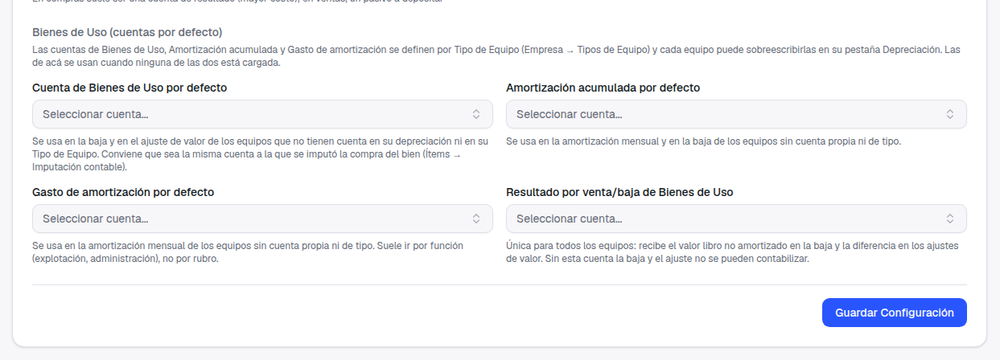
3. Para usarlo hay que tener activo el módulo Equipos
La depreciación, las cuentas de Bienes de Uso y la baja viven en el módulo Equipos, que hasta ahora estaba oculto en tu instalación. Con esta entrega aparece en el menú lateral, dentro de Principal, y en Empresa → Módulos como cualquier otro módulo, con su interruptor para activarlo o desactivarlo.
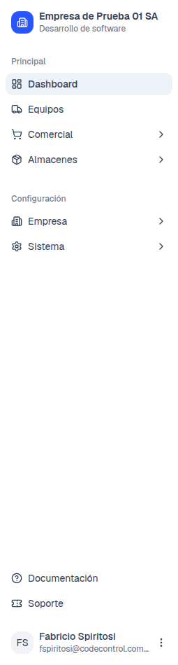
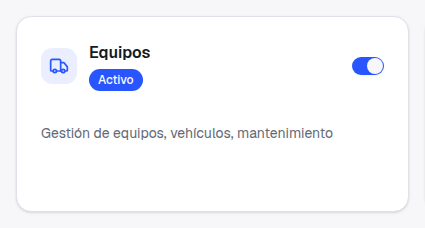
Permisos: hay que dárselos a los demás roles
Como el módulo estaba oculto, los roles que creaste hasta ahora no tienen permiso sobre Equipos ni sobre Tipos de Equipo; nunca se pudo otorgar. Vos, como Propietaria, ves todo. Para cualquier otro rol (Contador, Administrativo, etc.) entrá a Empresa → Roles, editá el rol y marcá en Equipos y en Tipos de Equipo lo que corresponda: Ver para consultar, Editar para contabilizar y cambiar cuentas, Eliminar para dar de baja.
4. Paso a paso, con el ejemplo de un rodado
Los datos son de demostración: un tipo de equipo Rodados con sus tres cuentas, otro Maquinaria sin ninguna, y dos equipos, uno de cada tipo. Las cuentas por defecto de Configuración quedaron vacías a propósito, para que se vea de dónde sale cada cuenta.
-
Cargá los tipos de equipo con sus cuentas. En Empresa → Equipos → Tipos de Equipo, al crear o editar un tipo, debajo del nombre aparece la sección Cuentas contables (Bienes de Uso) con los tres campos. Escribí el código o el nombre para buscar la cuenta, igual que en Configuración. Un campo que dejás Sin asignar usa la cuenta por defecto.
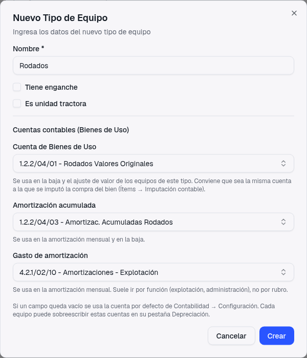
El tipo Rodados con sus tres cuentas del rubro 1.2.2/04 y el gasto de explotación. Debajo de cada campo, la ayuda dice para qué se usa. Qué tipos conviene tener
Uno por rubro de tu plan de cuentas: Rodados, Maquinarias y Equipos, Muebles y Útiles, Equipos Tecnológicos… Así cada tipo apunta a su cuenta de valores originales y a su acumulada, y el rubro cierra solo.
Si el tipo ya tiene equipos amortizados
Al cambiarle una cuenta, el modal te muestra un aviso naranja: los asientos ya generados no cambian, las próximas amortizaciones y la baja usan la cuenta nueva. Lo explicamos en el paso d.
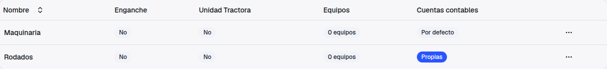
En el listado, la columna Cuentas contables te dice de un vistazo qué tipos ya tienen sus cuentas: Propias (las tres cargadas), 2/3 propias o Por defecto (ninguna). Acá Maquinaria todavía no tiene las suyas: es el que va a fallar en el punto 5. -
Dá de alta el equipo y configurá su depreciación. En Equipos → Nuevo Equipo elegí el tipo de equipo (Rodados). Después, en el detalle, pestaña Depreciación → Configurar Depreciación: valor de origen, valor residual, vida útil en meses, fecha de inicio y método. No hace falta tocar cuentas: apenas configurás la depreciación aparece la card Cuentas contables, que te muestra las tres cuentas que el sistema va a usar y de dónde sale cada una.
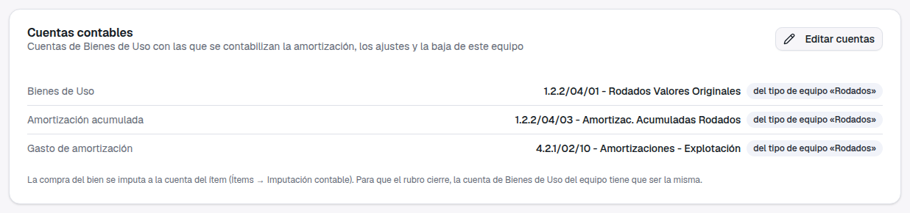
Las tres cuentas del equipo, cada una con la etiqueta del tipo de equipo «Rodados»: el equipo no tiene cuentas propias, hereda las del tipo. Abajo, el recordatorio sobre la compra del bien que explicamos en el punto 7. -
Contabilizá la amortización. En el cronograma de la misma pestaña, cada período pendiente tiene el botón Contabilizar. Al hacerlo, el sistema genera el asiento del mes con las cuentas de la card y marca el período como contabilizado. Para todos los equipos a la vez, en el listado de Equipos está Contabilizar Depreciaciones, donde elegís hasta qué fecha.
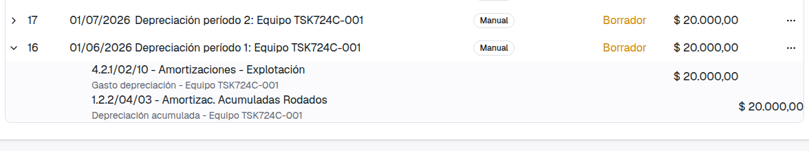
El asiento en Contabilidad → Asientos: Debe 4.2.1/02/10 Amortizaciones - Explotación / Haber 1.2.2/04/03 Amortizac. Acumuladas Rodados, las cuentas del tipo Rodados. Antes de esta entrega ese haber iba a la única acumulada global, fuera cual fuera el rubro. -
Si un equipo puntual va a otra cuenta, cambiala solo para ese equipo. En la card Cuentas contables → Editar cuentas. Cada campo que dejás vacío sigue usando la del tipo (la ayuda debajo te dice cuál); el que completás pasa a ser propio de ese equipo. Es para excepciones: si todos los equipos de un tipo tienen que cambiar, cambiá el tipo.
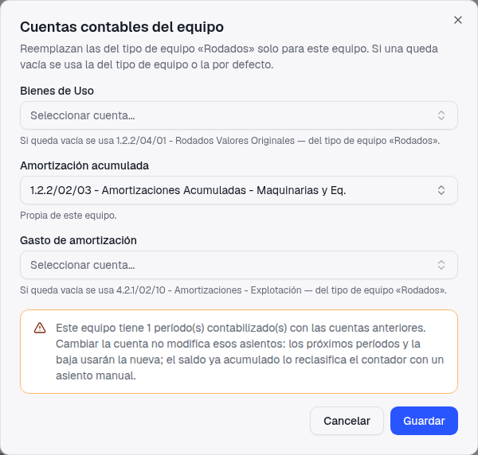
Se cambió solo la Amortización acumulada. Como ya había un período contabilizado, aparece el aviso naranja. 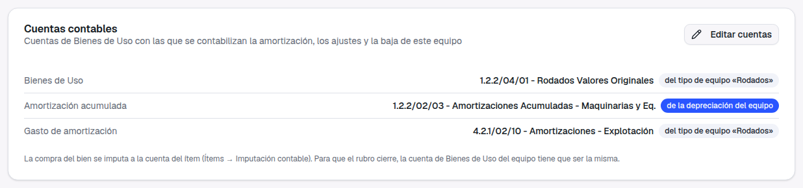
Después de guardar: la acumulada lleva la etiqueta de la depreciación del equipo; las otras dos siguen viniendo del tipo. Qué significa el aviso naranja
Cambiar una cuenta (en el equipo o en el tipo) no toca los asientos ya generados: los próximos períodos y la baja usan la cuenta nueva, y lo que se acumuló hasta ese momento queda en la anterior. El sistema te avisa pero no te frena; si hace falta mover el saldo, tu contador lo reclasifica con un asiento manual. En los datos de ejemplo, el asiento 17 (período 2) ya acredita la cuenta nueva y el 16 quedó como estaba.
5. Si falta una cuenta, no se contabiliza y te dice dónde arreglarlo
Esto es un cambio de comportamiento, igual que el de las facturas en el ticket 721. Hasta ahora, la baja de un equipo sin cuentas configuradas se hacía igual: el equipo quedaba inactivo, pero el asiento no se generaba y nadie se enteraba. Y el ajuste de valor, lo mismo. Desde esta entrega, ninguna operación sobre un equipo genera un asiento incompleto ni se saltea el asiento: o se contabiliza con todas sus cuentas, o no se hace y aparece un mensaje que nombra el equipo, qué cuenta falta y los tres lugares donde podés cargarla.
![Pestaña Depreciación del equipo TSK724C-002: la card Cuentas contables muestra en rojo Sin cuenta — asignala acá, en el tipo de equipo «Maquinaria» o en Contabilidad → Configuración en las tres filas, y abajo a la derecha el mensaje: No se puede contabilizar la amortización del equipo «TSK724C-002»: no tiene cuenta de Amortización acumulada ni de Gasto de amortización. Asignalas en la depreciación del equipo (pestaña Depreciación → Cuentas contables), en el tipo de equipo «Maquinaria» (Empresa → Tipos de Equipo) o configurá Amortización acumulada por defecto y Gasto de amortización por defecto en Contabilidad → Configuración](assets/tsk724c-10-toast-error-sin-cuentas.png)
En la contabilización masiva, los demás no se frenan
Si contabilizás todos los equipos de una vez y a alguno le faltan cuentas, ese se omite y los demás se contabilizan normalmente. Te lo dice antes de confirmar y te lo repite después con el resultado.
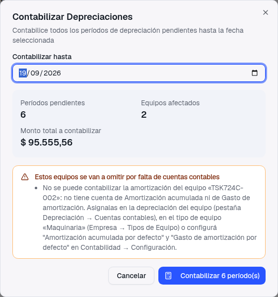
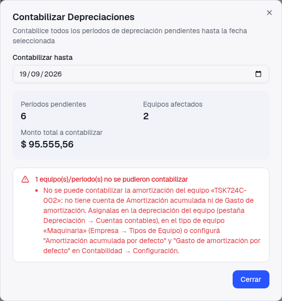
Qué vas a notar en el día a día
Puede pasar que una baja o una amortización que antes "pasaba" ahora se frene. Eso es correcto: antes pasaba sin asiento. Cuando te aparezca el mensaje, no hay nada roto: leé qué cuenta nombra, cargala en el tipo de equipo (lo más práctico) y volvé a intentar. El recuadro amarillo de la contabilización masiva y la card en rojo te permiten adelantarte antes de que pase.
6. La baja de un equipo
La baja se hace desde el botón Baja del detalle o desde el menú (…) del listado; los dos abren el mismo diálogo. Elegís el motivo y, antes de confirmar, el diálogo te dice qué va a pasar:
- Venta, Destrucción Total y Devolución generan el asiento de baja: se descarga el valor del bien (Bienes de Uso), se cancela lo amortizado (Amortización acumulada) y el valor que quedaba sin amortizar va a Resultado por venta/baja de Bienes de Uso. El diálogo lista las tres cuentas y de dónde sale cada una.
- Otro no genera asiento, y el diálogo lo dice.
- Un equipo sin depreciación configurada se da de baja sin asiento, con cualquier motivo, y el diálogo también lo avisa.
- Si falta una cuenta, aparece un aviso naranja y, si igual confirmás, la baja no se hace: el equipo sigue activo.
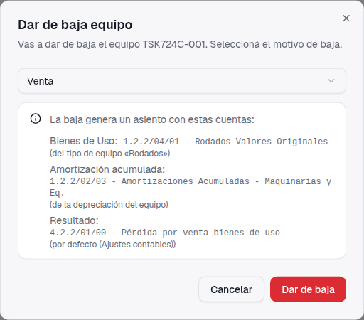
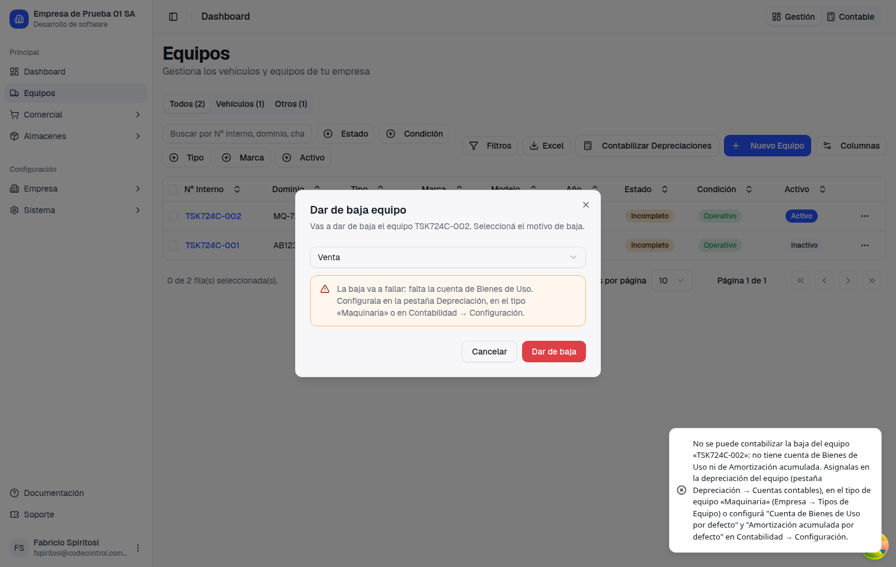
7. Importante: la compra del bien entra por el ítem
Dos caminos que tienen que apuntar a la misma cuenta
Cuando comprás un bien de uso con una factura de compra, el valor del bien entra a Bienes de Uso por la cuenta del ítem de esa factura (Ítems → Imputación contable), como resolvimos en el ticket 721. Ese asiento además registra el IVA crédito y la deuda con el proveedor. Por eso el equipo no genera un asiento de alta cuando lo cargás en Equipos ni cuando configurás su depreciación: sería duplicar el activo y la deuda.
El equipo se carga aparte, en Equipos, y sus cuentas salen del tipo de equipo. Para que el rubro cierre, la cuenta de Bienes de Uso del tipo de equipo tiene que ser la misma a la que se imputó la compra. Si el ítem "Camión Iveco" va a 1.2.2/04/01 Rodados Valores Originales, el tipo Rodados tiene que tener esa misma cuenta; si no, la compra suma en una cuenta y la baja resta en otra.
Hoy la factura de compra y el equipo no están vinculados: el sistema no sabe qué factura corresponde a qué equipo, así que no puede controlar esa coincidencia por vos. Lo recordamos en la ayuda de los campos y en la card de cuentas, y lo anotamos como mejora futura: crear el equipo desde la línea de la factura de compra, heredando la cuenta y el valor de origen.
Los equipos que no se compraron con factura del sistema
Los bienes históricos, los aportados por un socio o los comprados antes de usar el sistema entran a Bienes de Uso por los saldos de apertura o por un asiento manual, como hasta ahora. En Equipos los cargás igual, con su valor de origen y su depreciación, para que la amortización mensual y la baja salgan solas.